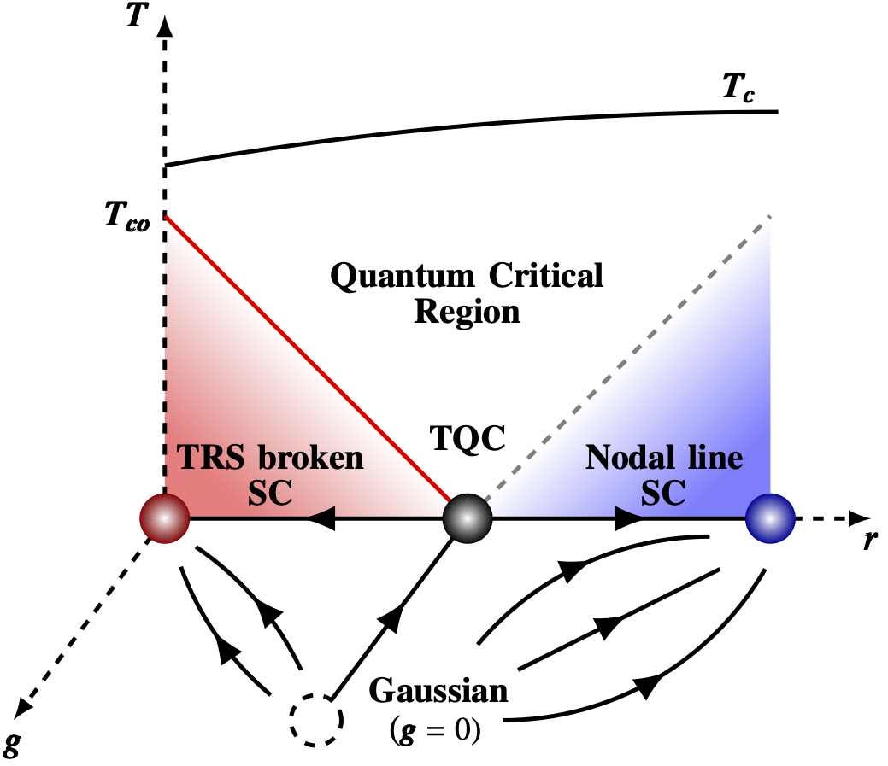

SangEun Han
- <Mar. 2023> I will give a contributed talk "Microscopic theory of multi-stage Fermi surface reconstruction in higher-rank moment quantum materials" (2023/03/08 08:36 am) at APS march meeting 2023, Las Vegas, Nevada, USA!
- <Feb. 2023> The preprint of my new paper "Complex fixed points of the non-Hermitian Kondo model in a Luttinger liquid (arXiv:2302.07883)" has been posted on arXiv!
TA class materials: here
Publications on
Publications on
Publications on
Publications on
Articles related to my works:
KAIST Compass 2019 Fall (Newsletter of College of Natural Science)
Physics & High Technology 2019 09 (KPS Webzine, in Korean)
KAIST Department of Physics Newsletter Fall 2018, Vol. 07 (in Korean)
KAIST Department of Physics Newsletter Autumn 2017, Vol. 05 (in Korean)
- "Complex fixed points of the non-Hermitian Kondo model in a Luttinger liquid"WNESangEun Han, Daniel J. Schultz, and Yong Baek Kim
arXiv:2302.07883"Microscopic theory of multi-stage Fermi surface reconstruction in higher-rank moment quantum materials"SangEun Han, Daniel J. Schultz, and Yong Baek Kim
arXiv:2207.07661"Non-Fermi liquid behavior and quantum criticality in cubic heavy fermion systems with non-Kramers multipolar local moments"SangEun Han, Daniel J. Schultz, and Yong Baek Kim
Phys. Rev. B 106, 155155 (2022) (arXiv:2206.02808)"Non-Fermi liquid induced by Bose metal with protected subsystem symmetries"SangEun Han and Yong Baek Kim
Phys. Rev. B 106, L081106 (2022) (arXiv:2102.05052)"Realization of fractonic quantum phases in the breathing pyrochlore lattice"SangEun Han, Adarsh S. Patri, and Yong Baek Kim
Phys. Rev. B 105, 235120 (2022) (arXiv:2109.03835)"Lattice vibration as a knob on exotic quantum criticality"SangEun Han, Junhyun Lee, Eun-Gook Moon
Phys. Rev. B 103, 014435 (2021) (arXiv:1911.01435)"Emergent Anisotropic Non-Fermi Liquid at a Topological Phase Transition in Three Dimensions"SangEun Han, Changhee Lee, Eun-Gook Moon, and Hongki Min
Phys. Rev. Lett. 122, 187601 (2019) (arXiv:1809.10691)"Quantum criticality with infinite anisotropy in topological phase transitions between Dirac and Weyl semimetals""Long-range Coulomb Interaction effects on Topological Phase Transitions between Semi-metals and Insulators"SangEun Han and Eun-Gook Moon
Phys. Rev. B 97, 241101(R) (2018) (arXiv:1802.05727)
Chiral symmetry is one of the most fundamental symmetries in nature, which prohibits mass generation of fermions. Remarkable advances in topological matter reveal the chiral symmetry may be realized as lattice symmetries of topological state. A topological phase transition is intrinsically tied to breaking a chiral symmetry. The topological transition, however, is lack of the Lorentz symmetry in contrast to particle physics. In particular, the Coulomb interaction is instantaneous, and it is imperative to understand its effects on chiral symmetry breaking transitions. Thus, we investigate long-range Coulomb interaction effects on topological phase transitions and find striking properties with novel scaling functions."Topological Phase Transitions in Line-nodal Superconductors"
 We study the topological phase transition accompanied by the change in the topological nodal structure. The nodal fermionic excitation induces a novel universality class which is characterized by the hyperscaling violation, emergent relativistic scale, and large anomalous dimensions. We propose that the unusual linear phase boundary as a signal of the underlying line-nodal fermions."Explaining the Lepton Non-universality at the LHCb and CMS from an Unified Framework"Sanjoy Biswas, Debtosh Chowdhury, SangEun Han, and Seung J. Lee
JHEP 02, 142 (2015) (arXiv:1409.0882)Academic Affiliations- Department of Physics, University of Toronto, Toronto, Canada November 2020 ~ Present
Postdoctoral Fellow- School of Computational Sciences, KIAS, Seoul, Korea August 2020 ~ October 2020
Visiting Scholar- Department of Physics, KAIST, Daejeon, Korea March 2013 ~ August 2020
Candidate of Integrated Master's and Ph.D Program
Education- Korea Advanced Institute of Science and Technology, Daejeon, Korea March 2013 ~ August 2020Doctor of Philosophy in PhysicsThesis Adviosr: Prof. Eun-Gook Moon
-
Korea Advanced Institute of Science and Technology, Daejeon, Korea Feburary 2010 ~ Feburary 2013Bachelor of Science, Magna Cum Laude, Feburary, 2013Double major in Physics and Mathematical Sciences
-
Hankuk University of Foreign Studies, Seoul, Korea March 2006 ~ January 2008in Department of Physics
Scholarships- Scholarship of Center for Theoretical Physics of the Universe, IBS March 2014 ~ June 2015
-
Academic Scholarship in Hankuk University of Foreign Studies 2006 Fall ~ 2008 Spring
Awards- 2018 Workshop on Spin-orbit Coupled Topological states Outstanding Poster Award October 2018
- 2018 Pre-doctoral Fellow of Physics at KAIST August 2018
- 2014 Spring Outstanding Teaching Assistant Awards September 2014
- 2011 Collegiate Engineering Mathematics Competition Bronze December 2011
- 2011 Fall Semester's FDC Award, Presidential Design Award Feburary 2012
Services- Referee January 2020 ~ Presentof Phys. Rev. Research
- Referee April 2019 ~ Presentof Phys. Rev. Lett.
- Referee September 2018 ~ Presentof Phys. Rev. B
- Military service Feburary 2008 ~ January 2010at Republic of Korea Army, the 30th Division, Republic of Korea
Research Interests- Theoretical Physics, Condensed matter physics, Strongly correlated systems, Quantum phase transitions, Theoretical particle physics, Quantum field theory, Mathematical physics, Statistical physics (equilibrium or non-equilibrium), Quantum spin liquids, Quantum chaos, SYK physics, Non-Fermi liquids, Non-Hermitian systems, Flat bands, Deconfined Quantum Critical Points, Fractons, etc.
Teaching Experiences- Teaching Assistant for the Physics Department, KAIST September 2017 ~ December 2017Course: Graduate Quantum Mechanics 2
- Teaching Assistant for the Physics Department, KAIST March 2017 ~ June 2017Course: Graduate Quantum Mechanics 1
- Teaching Assistant for the Physics Department, KAIST September 2016 ~ December 2016Course: Colloquium & Seminar
- Teaching Assistant for the Physics Department, KAIST March 2016 ~ June 2016Course: Graduate Quantum Mechanics 1
- Teaching Assistant for the Physics Department, KAIST September 2015 ~ December 2015Course: Undergraduate Quantum Mechanics 2
- Teaching Assistant for the Physics Department, KAIST March 2015 ~ June 2015Course: Undergraduate Quantum Mechanics 1
- Teaching Assistant for the Physics Department, KAIST March 2014 ~ June 2014Course: Quantum Field Theory 2
- Teaching Assistant for the Physics Department, KAIST September 2013 ~ December 2013Course: General Physics 2
- Teaching Assistant for the Physics Department, KAIST March 2013 ~ June 2013Course: General Physics 1
- KAIST-Weizmann Workshop on Quantum Condensed Matter Physics December 2019"Emergence of Supersymmetry from spin-lattice coupling"
- March 2023APS March Meeting 2023 (Talk)WNE
- Quantum Matter Workshop (Poster) November 2022
- 2022 CAP congress (Talk) June 2022
- APS March Meeting 2022 (Talk) March 2022
- (Virtual) APS March Meeting 2020 (Talk) March 2020
- 12th BK21+ Young Physicists Workshop (Talk) February 2020
- 2019 KPS Fall Meeting (Talk) October 2019
- APS March Meeting 2019 (Talk) March 2019
- 11th BK21+ Young Physicists Workshop (Talk) February 2019
- APS March Meeting 2018 (Talk) March 2018
- APS March Meeting 2017 (Talk) March 2017
- 2018 KPS Spring Meeting (Talk) April 2018
- 2017 KPS Spring Meeting (Talk) April 2017
- IBSPCS-KIAS International Workshop Frustrated Magnetism (Poster) October 2019
- The 2nd Workshop on Spin-Orbit Coupled Topological States (Poster) September 2019
- KIAS workshop on Topology and Correlation in quantum materials (Poster) May 2019
- The 19th JAPAN-KOREA-TAIWAN SYMPOSIUM ON STRONGLY CORRELATED ELECTRON SYSTEMS (Poster) January 2019
- The 1st Workshop on Spin-Orbit Coupled Topological States (Poster) October 2018
- Advanced School and Workshop on Correlations in Electron Systems - from Quantum Criticality to Topology - (Poster) August 2018
- International Workshop on "New Paradigms in Quantum Matter 2018" (Poster) June 2018
- KIAS workshop on Topology and Correlation (Poster) June 2018
- 10th BK21+ Young Physicists Workshop (Poster) Feburary 2018
- The 19th International Conference on Recent Progress in Many-Body Theories (Poster) June 2017
- 2016 Quantum Materials Symposium (Poster) Feburary 2016
2015: 2015/07 / 2015/08 / 2015/09 / 2015/10 / 2015/11 / 2015/12
2016: 2016/01 / 2016/02 / 2016/03 / 2016/04 / 2016/05 / 2016/06 / 2016/07 / 2016/08 / 2016/09 / 2016/10 / 2016/11 / 2016/12
2017: 2017/01 / 2017/02 / 2017/03 / 2017/04 / 2017/05 / 2017/06 / 2017/07 / 2017/08 / 2017/09 / 2017/10 / 2017/11 / 2017/12
2018: 2018/01 / 2018/02 / 2018/03 / 2018/04 / 2018/05 / 2018/06 / 2018/07 / 2018/08 / 2018/09 / 2018/10 / 2018/11 / 2018/12
2019: 2019/01 / 2019/02 / 2019/03 / 2019/04 / 2019/05 / 2019/06 / 2019/07 / 2019/08 / 2019/09 / 2019/10 / 2019/11 / 2019/12
2020: 2020/01 / 2020/02 / 2020/03 / 2020/04 / 2020/05 / 2020/06 / 2020/07 / 2020/08 / 2020/09 / 2020/10 / 2020/11 / 2020/12
2021: 2021/01 / 2021/02 / 2021/03 / 2021/04 / 2021/05 / 2021/06 / 2021/07 / 2021/08 / 2021/09 / 2021/10 / 2021/11 / 2021/12
2022: 2022/01 / 2022/02 / 2022/03 / 2022/04 / 2022/05 / 2022/06 / 2022/07 / 2022/08 / 2022/09 / 2022/10 / 2022/11 / 2022/12
2023: 2023/01 / 2023/02